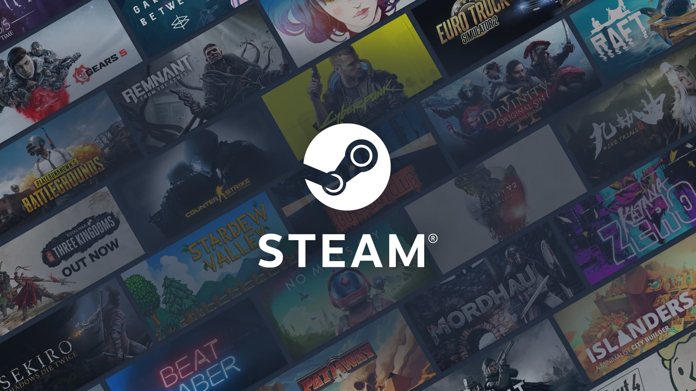
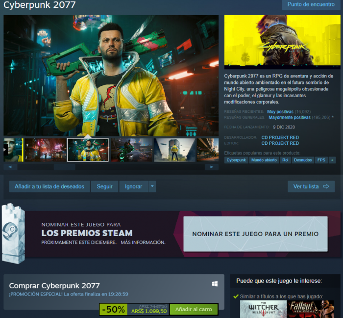

¿Que es Steam?
Steam es una plataforma de distribución digital, gestión de derechos digitales (DRM), y redes sociales para videojuegos desarrollada por Valve Corporation. Lanzada en 2003, Steam ha evolucionado desde una simple plataforma para actualizaciones automáticas de juegos hasta convertirse en uno de los servicios más importantes en la industria de los videojuegos.
Steam ofrece una vasta biblioteca de juegos de diversos géneros, desarrolladores y editores. Los usuarios pueden comprar, descargar y jugar juegos directamente desde la plataforma. También proporciona actualizaciones automáticas para los juegos que los usuarios tienen en su biblioteca. Steam utiliza un sistema de DRM para proteger los derechos de autor y prevenir la piratería. Los juegos comprados a través de Steam requieren que el usuario inicie sesión en su cuenta de Steam para jugar, lo que ayuda a garantizar que el software sea legítimo. Steam incluye una variedad de funciones sociales, como amigos, grupos, chat, y foros comunitarios. Los jugadores pueden ver qué están jugando sus amigos, unirse a grupos con intereses comunes, y comunicarse a través de mensajes y chat en el juego.
Steam es conocida por sus grandes ofertas y ventas, como las rebajas de verano e invierno. Estas promociones ofrecen descuentos significativos en una amplia gama de juegos y software, lo que atrae a millones de jugadores a la plataforma. Steam Workshop permite a los jugadores y desarrolladores crear, compartir y descargar mods y contenido personalizado para sus juegos. Esto amplía la longevidad y la diversidad de muchos juegos al permitir modificaciones y expansiones creadas por la comunidad. Steam Cloud ofrece almacenamiento en la nube para guardar datos de juego y configuraciones. Esto permite a los jugadores acceder a sus datos guardados desde cualquier computadora que tenga Steam instalado, facilitando la continuidad de los juegos entre diferentes dispositivos. Steam también soporta la realidad virtual a través de SteamVR, una plataforma que facilita la compra y el uso de juegos y aplicaciones de realidad virtual compatibles.
Impacto y Exito
Steam ha transformado la manera en que los videojuegos se distribuyen y consumen. Ha permitido a los desarrolladores independientes (indies) llegar a una audiencia global sin necesidad de distribución física o grandes acuerdos editoriales. La plataforma ha introducido numerosas innovaciones en el mercado de juegos, desde el modelo de ventas digitales y actualizaciones automáticas hasta la integración de funciones sociales y comunitarias. Steam se ha consolidado como la plataforma de distribución digital líder en PC, con una base de usuarios que supera los 100 millones de cuentas activas. Su dominio ha sido tan significativo que ha influenciado profundamente el mercado de los videojuegos en PC. La plataforma ha permitido a muchos desarrolladores, especialmente a los independientes, lanzar sus juegos y encontrar una audiencia sin las barreras de entrada tradicionales. También ha dado lugar a un ecosistema de contenido generado por los usuarios y mods, enriqueciendo la experiencia de muchos juegos. Steam es mucho más que una simple tienda de juegos; es una plataforma integral que ha redefinido la distribución digital, la comunidad de jugadores y el desarrollo de videojuegos. Su influencia en la industria es considerable y su rol en el mercado continúa siendo fundamental.
